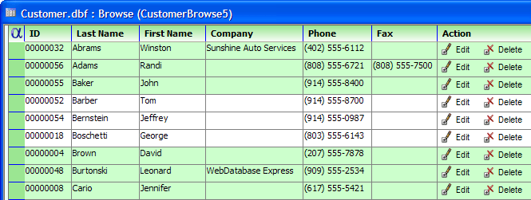

Placing Dynamic Content into Browse Columns
You may place dynamic (computed) content into any column of a browse. The column may contain any combination of the following content:
static text
images
dynamic text (computed from data in the current row)
To create dynamic content for a browse column:
Open a browse in design mode.
Select Column > Properties.
Display the Other tab of the Column Properties dialog.
Click Edit Display Expression to display the Conditional Expression Builder.
Click OK to save your edits and exit from the Column Properties dialog.
Each column of the browse has a .displayequation property. This property defines the button format. Here are three examples.
Alpha Five Version 8 allows you to embed buttons (and their attached Action or Xbasic scripts). This picture shows a browse with two buttons with constant text. You may place one or more buttons into any column of a browse. The button style may contain any combination of:
static text
graphic
dynamic text (computed from data in the current row)
Each column of the browse has a .displayequation property. This property defines the button format. Here are three examples.
Dynamic Text
If the company field is not blank, the button text displays "Edit " plus company name. It the company name is blank, no button appears. Note the custom images in the upper left corner and used for the row picker.
Static and Dynamic Text
This example shows a combination of static and dynamic text. It displays the company name if it is not blank.

Text and Graphic
This example shows a combination of static text and icon graphics.

The icons and buttons have a OnFlyOver style is used for the buttons. They do not look like buttons until you put your mouse over them.
Limitations
Desktop applications only.